Para estudiar el comportamiento del mapeo logístico utilizamos tres representaciones: la serie temporal, el diagrama cobweb y el diagrama de bifurcaciones. Aunque las tres describen el mismo sistema, cada una permite observar diferentes aspectos de su dinámica.
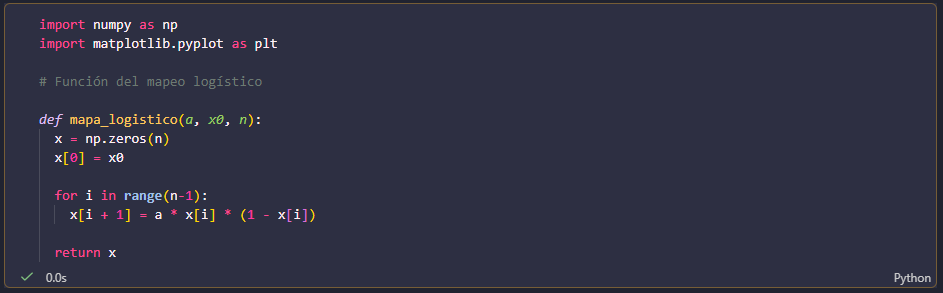
Serie temporal
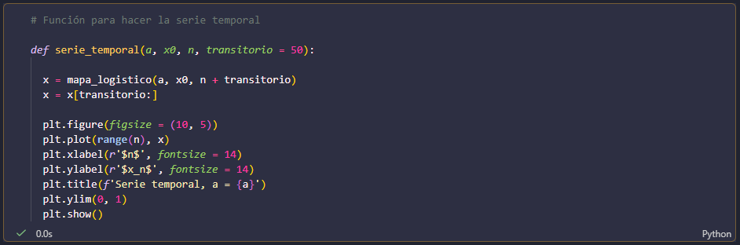
La serie temporal muestra cómo cambia (x_n) conforme aumenta el número de iteraciones (n), manteniendo fijo el valor de (a). Esta representación resulta especialmente útil para observar si la órbita converge a un punto fijo o si comienza a repetirse de manera periódica.
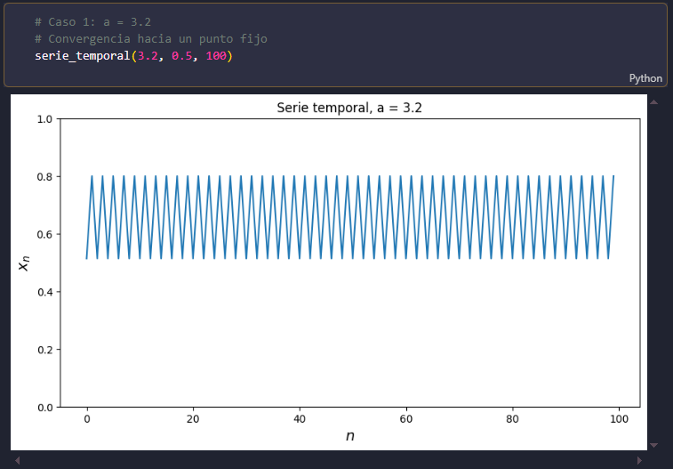
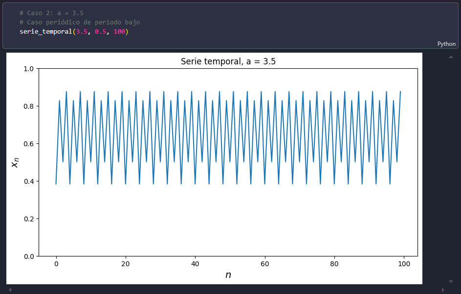
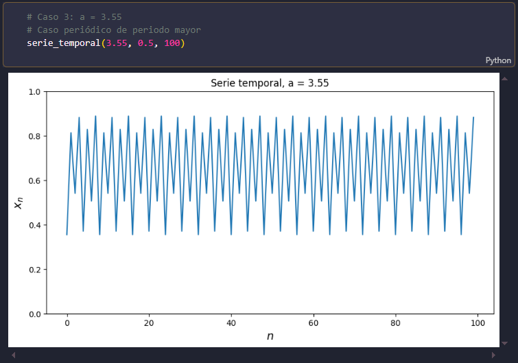
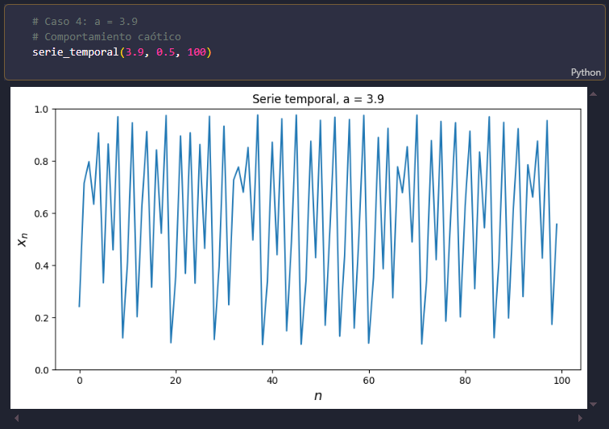
En las gráficas podemos observar que el comportamiento de la órbita depende del valor de \(a\). Para valores en los que existe un punto fijo estable, los valores de \(x_n\) se acercan progresivamente a un mismo valor. Cuando aparece una órbita periódica, los valores de \(x_n\) comienzan a repetirse después de cierto número de iteraciones. En el caso caótico, la serie temporal no muestra una repetición periódica evidente y presenta un comportamiento irregular.
Diagrama Cobweb
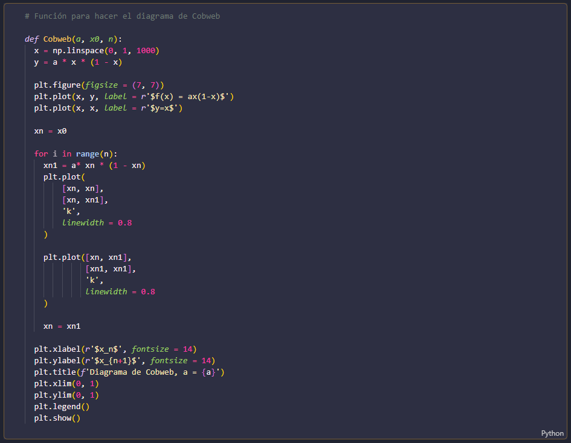
El diagrama cobweb permite visualizar cómo se construye la órbita a partir de la función $$ f(x)=ax(1-x). $$ Partiendo de la condición inicial \(x_0\), seguimos sucesivamente los valores de la órbita mediante movimientos verticales hacia la curva \(f(x)\) y horizontales hacia la recta \(y=x\).
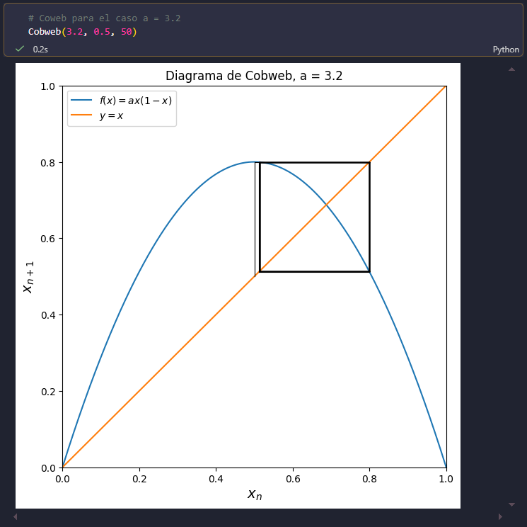
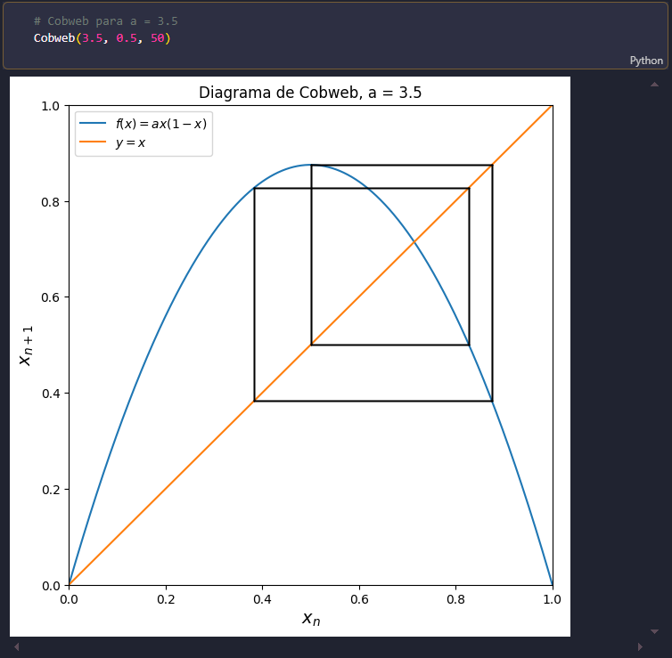
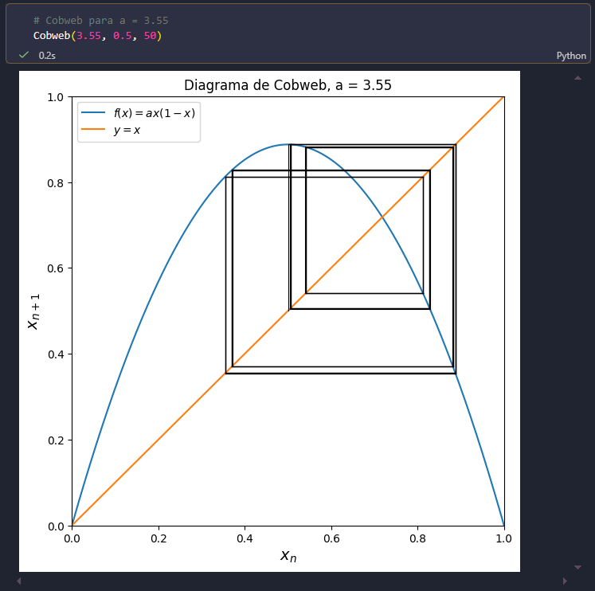
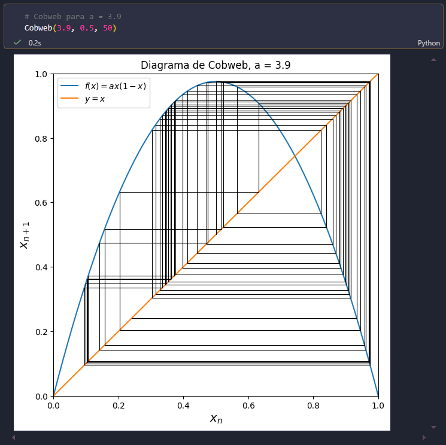
En el Cobweb podemos observar hacia qué comportamiento tiende la órbita. Cuando los movimientos se acercan a un único punto, se identifica la convergencia hacia un punto fijo. Cuando los movimientos forman un ciclo entre varios valores, podemos reconocer una órbita periódica. Esta representación permite visualizar de manera intuitiva la dinámica de una órbita, aunque la serie temporal puede ser más clara para determinar exactamente su periodo.
Diagrama de Bifurcaciones
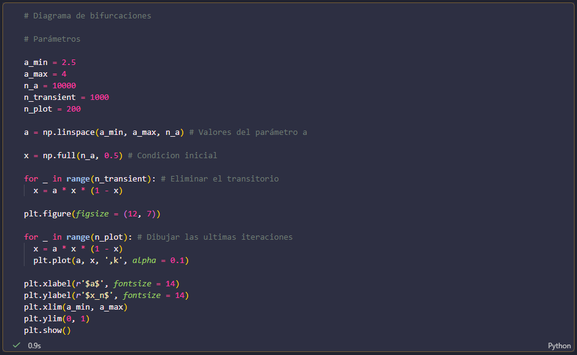
A diferencia de las representaciones anteriores, el diagrama de bifurcaciones no estudia solamente un valor de \(a\). En este caso variamos el parámetro desde \(a=2.5\) hasta \(a=4\) y observamos los valores que toma \(x_n\) después de eliminar el comportamiento transitorio.
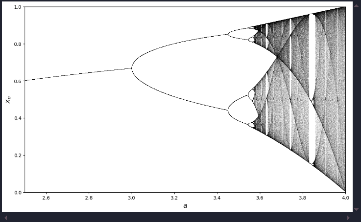
En el diagrama podemos distinguir diferentes regiones. Para ciertos valores de a, la órbita converge a un único punto estable. Al aumentar el parámetro, este comportamiento cambia y aparecen órbitas periódicas de periodo 2, después de periodo 4 y de periodos cada vez mayores.
Un aspecto interesante del diagrama aparece alrededor de \(a\approx3.83\). Aunque nos encontramos dentro de la región donde predomina el comportamiento caótico, aparece nuevamente una región ordenada que corresponde a una órbita periódica. Esta región se conoce como una ventana periódica. En ella el sistema vuelve a presentar un comportamiento periódico antes de regresar al caos conforme aumenta \(a\). Esto muestra que no es correcto pensar que el sistema se vuelve simplemente "cada vez más caótico" al aumentar el parámetro. La dinámica puede alternar entre regiones caóticas y periódicas.
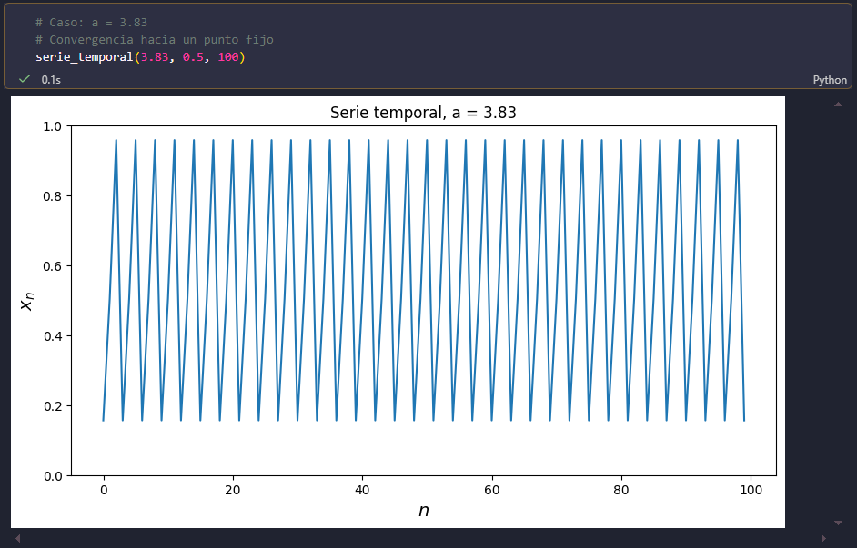
Comparación
Cada representación aporta información diferente. La serie temporal permite observar directamente la evolución de una órbita y reconocer si sus valores convergen o se repiten. El cobweb permite visualizar cómo se construye esa órbita y hacia dónde tiende. Finalmente, el diagrama de bifurcaciones permite observar cómo cambia el comportamiento del sistema al modificar \(a\).
Por lo tanto, para identificar un punto fijo o estudiar una órbita particular, la serie temporal y el cobweb resultan especialmente útiles. Para determinar el periodo, la serie temporal permite contar directamente los valores que se repiten. En cambio, para estudiar cómo cambia la dinámica al variar \(a\), el diagrama de bifurcaciones proporciona una visión mucho más clara y general.